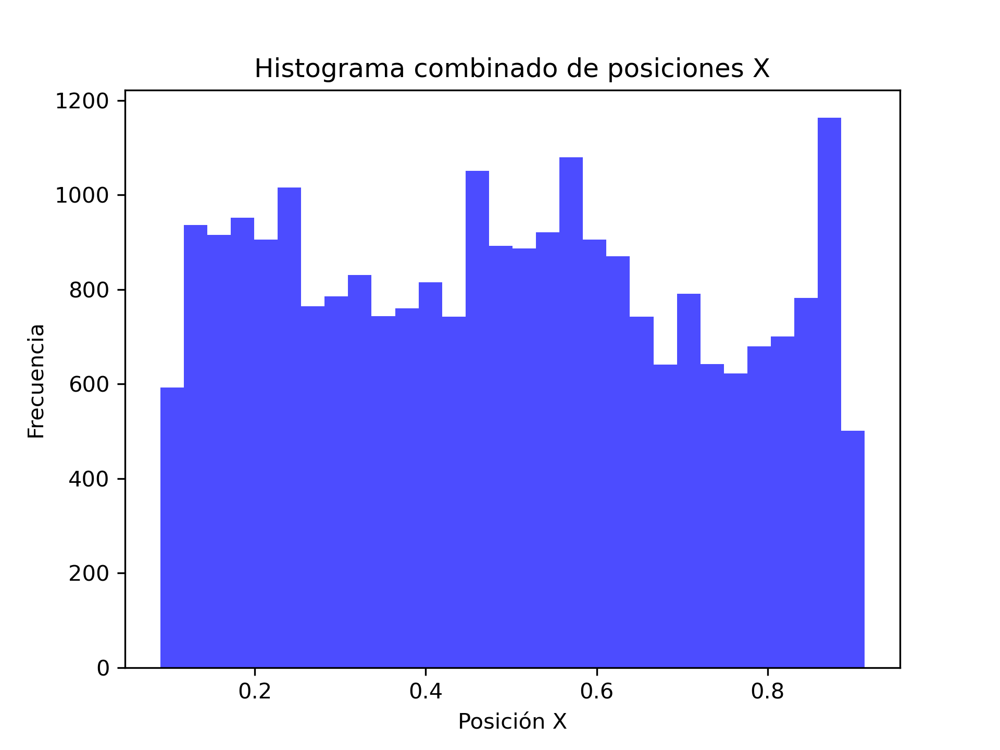
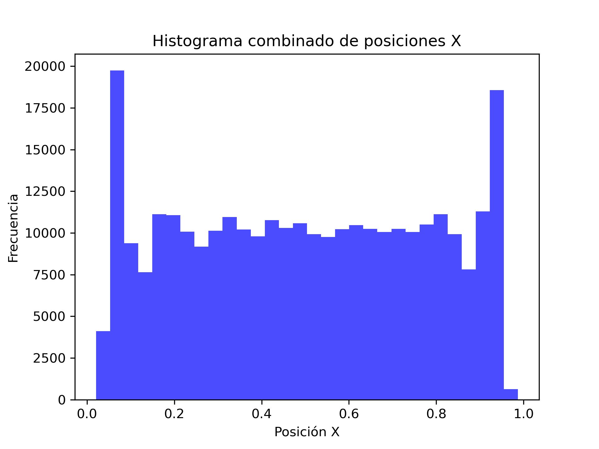
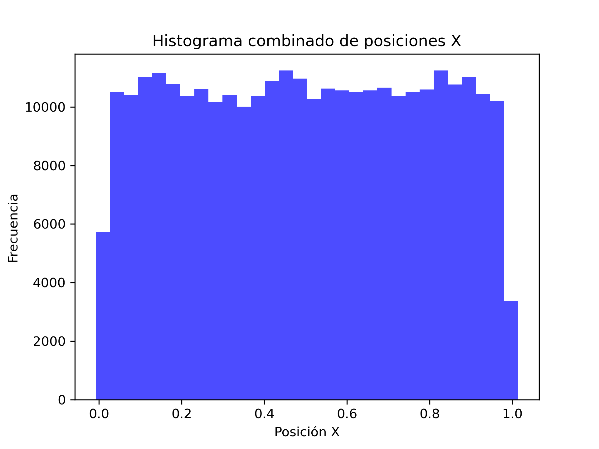

Análisis de posiciones utilizando histogramas
Se realizaron varios histogramas de las posiciones de los centros de los discos a lo largo del eje \(x\), esto para permitirnos analizar las posiciones más recurrentes de los discos y poder estudiar su comportamiento.
Simulación con 4 discos con radio de 0.1 unidades:
Empezando con la simulación de únicamente 4 discos, tenemos el siguiente histograma:

Del cual podemos observar que la posición más frecuente es en aproximadamente 0.9 unidades en el eje \(x\), seguido de esta tambíen se frecuentaban mucho en la posición 0.2, 0.5 y 0.6. Además la posición menos frecuente fue en 0.1 y en 0.95.
Simulación con 50 discos de radio 0.05 unidades:
A continuación, se presenta el histograma para varios discos con radio de 0.05 unidades:

Es interesante notar que las frecuencias mayores suceden en los extremos del contenedor.
Simulación con 50 discos de radio 0.01 unidades:
Por útimo tenemos el Histograma de varios discos con radio de 0.01 unidades:

Note que a diferencia del caso anterior, la frecuencia en los bordes disminuye considerablemente.